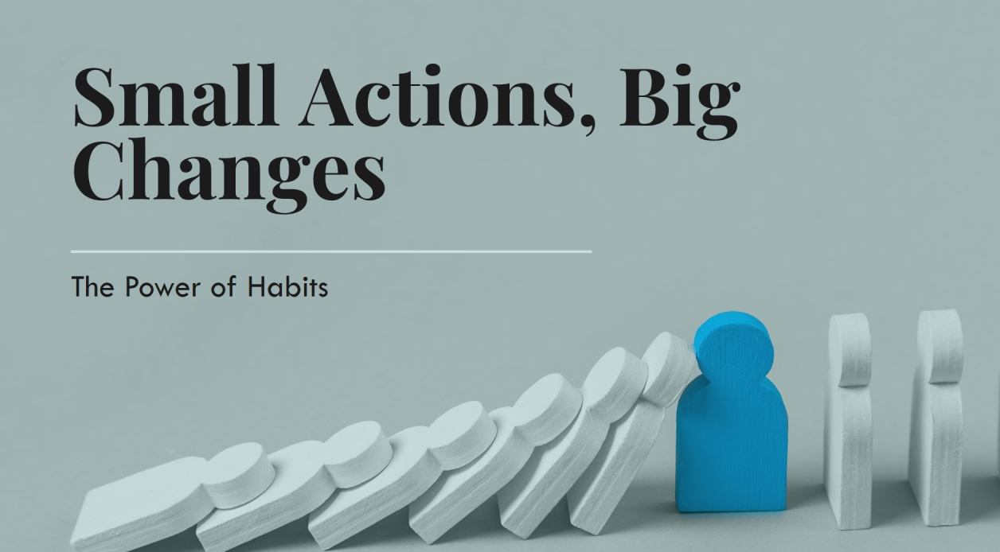
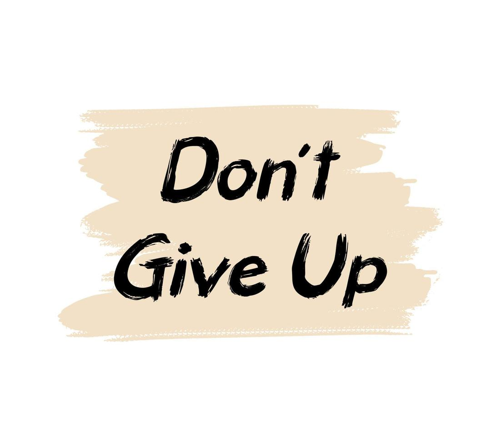

التغيير الكبير لا يأتي دائمًا بقرارات جذرية — أحيانًا يكفي تنفيذ عادات صغيرة ومتواصلة لتغيير مجرى حياتك. هنا جمعنا لك خطوات بسيطة تستطيع البدء بها اليوم لتتلقى نتائج واضحة مع مرور الوقت.
لماذا الخطوات الصغيرة فعّالة؟
لأن الالتزام بفعل بسيط يوميًا أسهل من الالتزام بتغييرات كبيرة فجائية. الاستمرارية تبني عادة، والعادة تتراكم، والتراكم ينتج عنه تقدم ملحوظ بعد فترة قصيرة أو متوسطة.
خطة من 6 خطوات صغيرة تبدأ اليوم
- التحديد الواضح: اختر هدفًا بسيطًا وواضحًا قابلًا للقياس.
- فعل يومي صغير: اجعل الهدف قلب روتين يومي لا يتجاوز 10-20 دقيقة.
- تابع تقدمك: سجّل إنجازك اليومي؛ حتى علامة ✓ تحفز الاستمرار.
- اجمع الموارد: وفر مصدرًا واحدًا للتعلم أو الأداة التي تحتاجها فقط.
- كافئ نفسك: بعد أسبوع أو أسبوعين من الالتزام، امنح نفسك مكافأة بسيطة.
- عدّل وواصل: راجع ما نجح وغيّر ما لا يناسبك ولا تفقد الاستمرارية.
أمثلة عملية — من خطوات صغيرة لنتائج حقيقية
• تعلم: 15 دقيقة يوميًا لقراءة أو مشاهدة فيديو تعليمي سيمنحك 91 ساعة سنويًا. • صحة: 10 دقائق يوميًا تمشيها سريعًا أفضل من لا شيء وتؤثر إيجابًا على المزاج. • إنتاجية: إعادة تنظيم مهمة واحدة كل يوم سيحسن سير عملك في غضون أسابيع.
التحديات وكيف تتغلب عليها
ستواجه أيامًا تفشل فيها — طبيعي. الحل أن تضع نظامًا بسيطًا للعودة: قلّل المطلوب في اليوم التالي وعدّل توقعاتك. المهم ألا تكسر سلسلة الأيام المتتالية للالتزام (Streak).
خاتمة
لا تنتظر اللحظة المثالية. ابدأ بخطوة صغيرة اليوم — حتى لو كانت بسيطة — لأنها قد تكون الشرارة التي تولّد نتائج كبيرة غدًا. الاستمرارية والتدرج هما مفتاح النجاح الحقيقي.